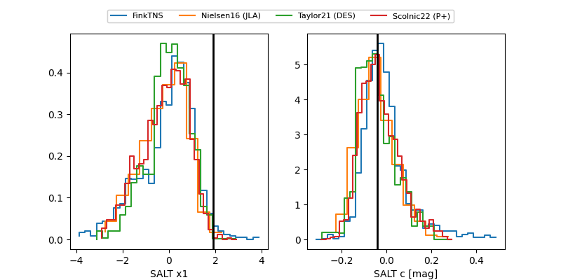

FINK: ZTF25abmhjal
Lasair: ZTF25abmhjal
ALeRCE: ZTF25abmhjal
TNS: 2025vqh
YSE: 2025vqh
ZTF25abmhjal (ztf,fink)
2025vqh (tns,yse)
equatorial (ra, dec) = (270.4048,+59.03797)
galactic (l, b) = (87.7484,+29.32467)

last ztfg=20.10
2 ztfg detections